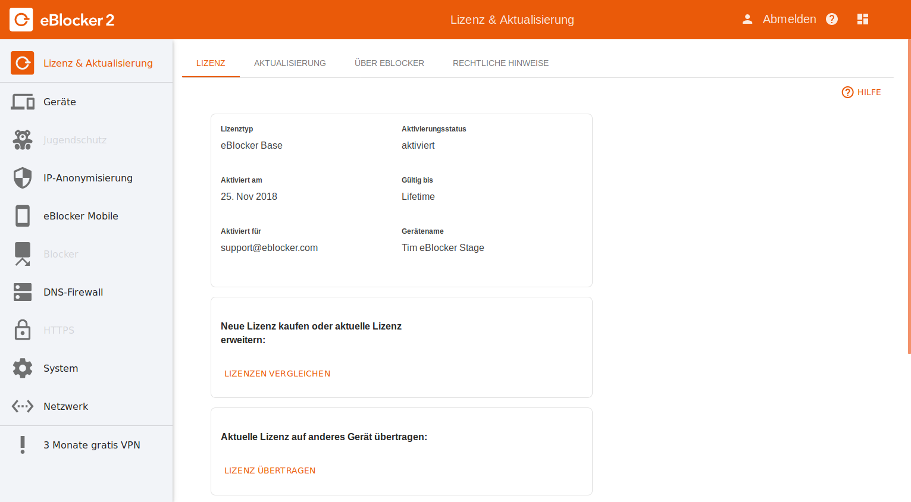
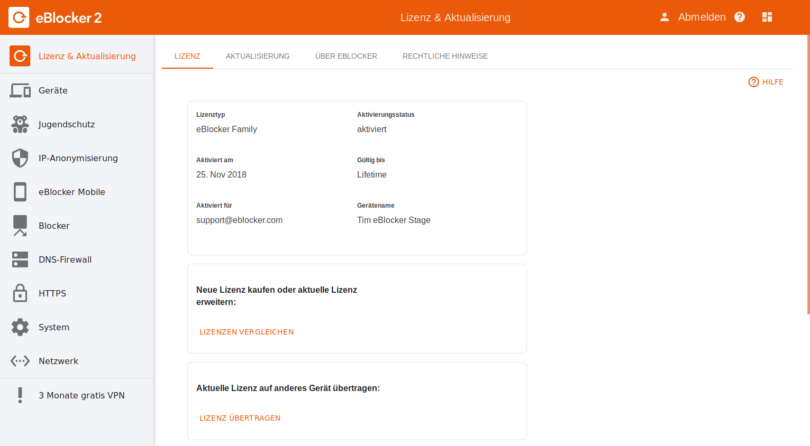

Deutsch | English
eBlocker Base

Der eBlocker Base ist unser Einsteiger-Modell. Er verfügt über die wichtigsten Funktionen die Sie benötigen, um anonym im Netz unterwegs zu sein. Er anonymisiert Ihre IP-Adresse via Tor oder VPN und verhindert so aktiv, dass Ihr Internetanbieter Ihr Surfverhalten ausspäht. Sie umgehen damit mühelos Zensur und länderspezifische Content-Sperren. Mit der eBlocker DNS-Firewall Funktion verteile der eBlocker DNS-Anfragen an eine Liste verschiedener DNS-Server oder lässt sie über das Tor-Netzwerk auflösen. Mit der eBlocker Mobile Funktion haben Sie Zugriff auf Ihren eBlocker auch außerhalb Ihres Netzwerkes.
eBlocker Pro
Der eBlocker Pro ergänzt die Funktionen des eBlocker Base um Funktionen, zum Schutz Ihrer Privatsphäre. Dazu gehört das Blockieren von Tracking- und Werbedienstleistern, IP-Anonymisierung und Gerätetarnung. Zusätzlich schützt er sie vor browserbasierten Malware und Phishing Gefahren.
eBlocker Family

Der eBlocker Family ergänzt die Funktionen des eBlocker Pro um Jugendschutz. Kinder und Jugendliche werden vor unangemessenen Web-Inhalten geschützt. Eltern können so ihre Kinder z.B. vor Pornographie, Gewalt oder Glücksspielen schützen und ein sicheres Surfen ermöglichen. Individuell pro Gerät und Benutzer, können Surfzeiten zudem definiert und die Nutzungsdauer eingeschränkt werden.